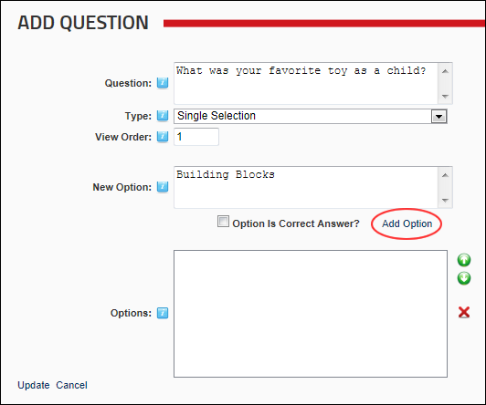

Adding a Question
How to add a question to the Survey module. Single selection questions permit users to select only one answer to a question.
- Select
 Add Question from the module actions menu - OR - Click the Add Question link.
Add Question from the module actions menu - OR - Click the Add Question link.
- In the Question text box, enter the question. E.g. Who was the leader female actor in My Fair Lady?
- At Type, select one of the following options:
- Select Single Selection to restrict users to selecting only one answer.
- Select Multiple Selection to permit users to select multiple answers.
- Optional. In the View Order text box, enter a number to set the position of this question in the list of questions. E.g. 1=first question, 2=second question, etc. Leave this field blank to order questions in the order they are entered.
- In the New Option text box, enter an option that the user can choose. E.g. Audrey Hepburn.
- Optional. At Option Is Correct Answer? to mark this option as the correct answer- OR - if the answer is incorrect, or if you do not want to indicate the correct answer. Note: A question may have multiple correct answers.
- Click the Add Option link.

- Repeat Steps 5-7 to add additional options.
-
Click the Update button.This will save the question and the associated answer options.